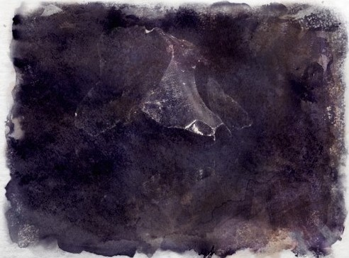

Obsidian
A volcanic rock formed by lava, it is a dark volcanic glass that fractures into incredibly sharp pieces making it a highly valued weapon component. It is also used as mirrors, gemstones and for ornamental purposes.